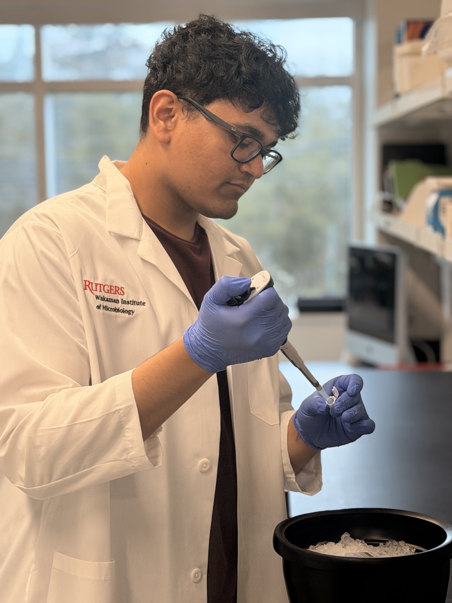

Computational Biologist & Data Analyst
Turning high-dimensional sequencing data into biological insight — functional genomics, chromatin architecture, and single-cell & spatial transcriptomics, bridged by hybrid wet-lab and computational expertise.

I'm a highly motivated scientist with demonstrated expertise in data engineering, data-management strategy, and computational analysis — currently a Postdoctoral Associate at Rutgers University studying 3D chromatin architecture and gene regulation.
I bring 2+ years of industry R&D, 8+ years of molecular wet-lab work, and 6 years of bioinformatics experience. My focus spans functional genomics (NGS, sequencing & genotyping platforms), chromatin architecture, and plant epigenomics — solving problems through statistical computing in R and Python.
A self-driven hybrid scientist, I'm actively seeking roles in Data Analytics, Computational Biology, Bioinformatics, or Genomics R&D.
Open to roles in Data Analytics, Computational Biology, Bioinformatics & Genomics R&D. Always happy to talk science.